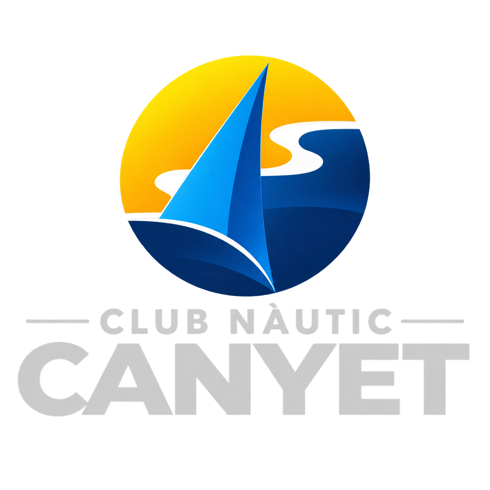
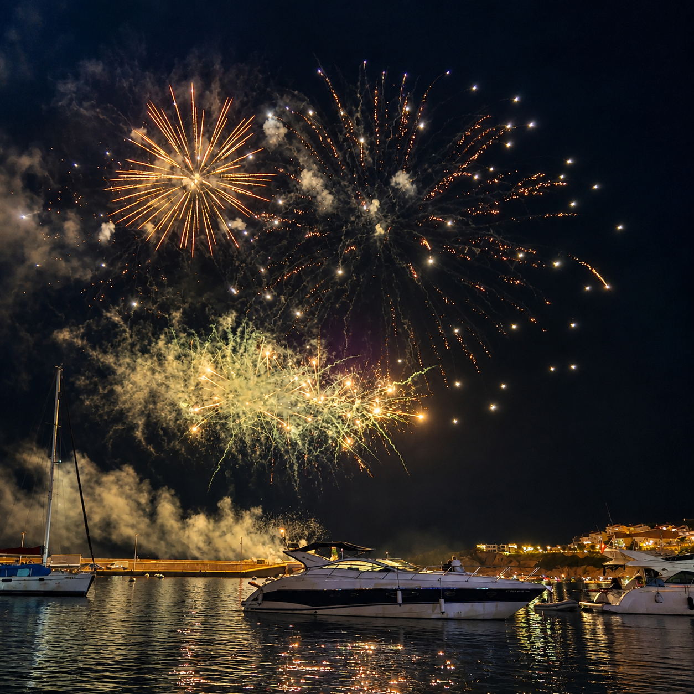
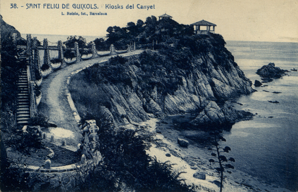
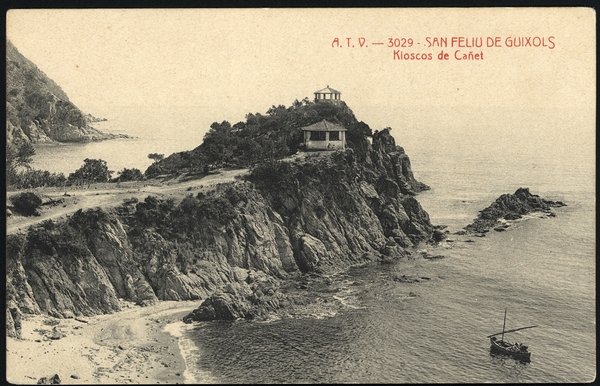
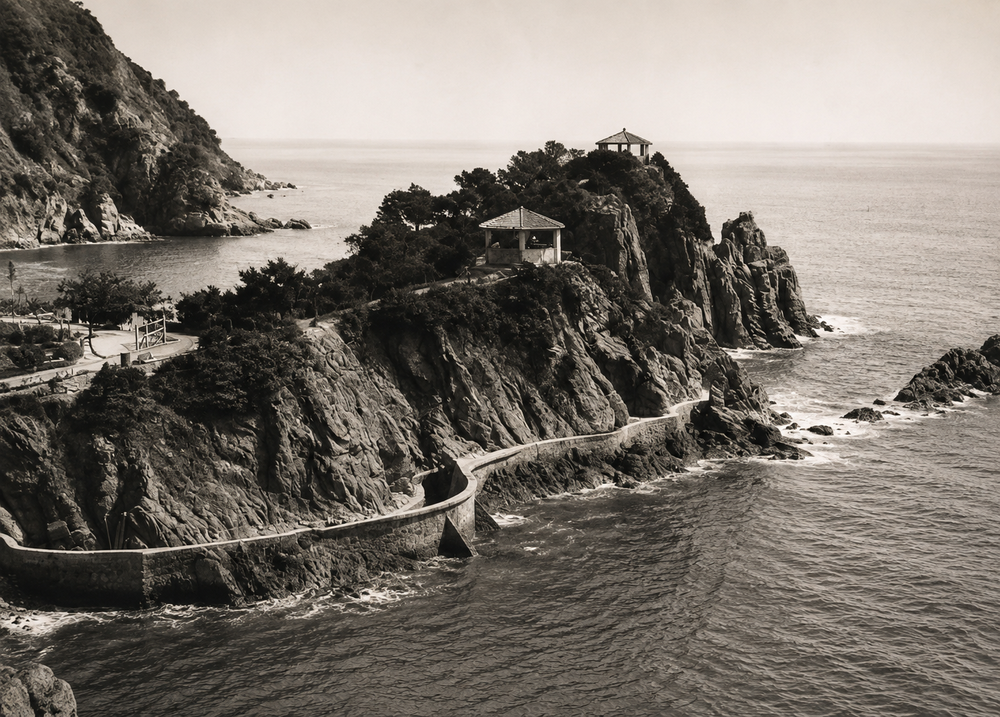
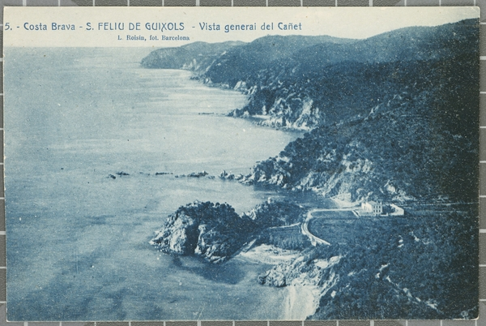
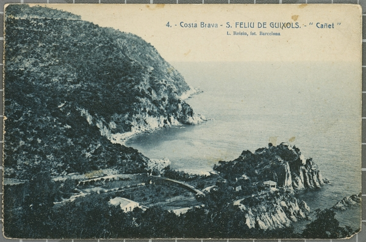
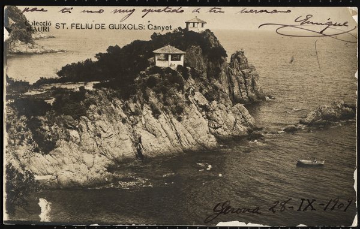
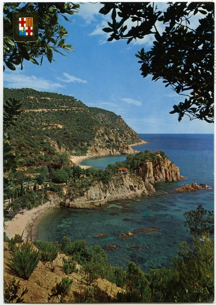

Fundació
Una història vinculada al mar, a Canyet i a les persones que han fet possible la vida nàutica d'aquest indret.

Un espai únic al cor de la Costa Brava
Història, fundació, valors i comunitat
→Socis, fondejos, embarcacions i serveis
→Sortides especials i experiències al mar
→Història de la cala, pontets i entorn
→Informació privada, avisos i documentació
→Estat de la mar, vent i previsió a Canyet
→El Club Nàutic Canyet neix amb una vocació clara: preservar una manera de viure el mar, la costa i la comunitat de Canyet · Rosamar.
Més que un espai per a la navegació, el club és un punt de trobada entre persones unides per la passió pel Mediterrani i pel privilegiat entorn de la Costa Brava.
Una història vinculada al mar, a Canyet i a les persones que han fet possible la vida nàutica d'aquest indret.
Respecte pel mar, convivència, tradició, natura i una manera responsable de gaudir de la Costa Brava.
Un club pensat per compartir experiències, navegar i mantenir viu l'esperit de Canyet.
Ser soci del Club Nàutic Canyet significa formar part d'una comunitat vinculada al mar i disposar d'un entorn privilegiat per gaudir de la navegació.
Quota bàsica del Club.
Quota anual de soci.
Per fer-se soci del CN Canyet, s'ha d'abonar una quota d'entrada única de 1.500 €. Aquest pagament és a fons perdut: es paga una sola vegada i no es recupera si el soci decideix abandonar el Club.
Pagament únic · a fons perdut.
Els menors de 32 anys no paguen l'adhesió al Club.
Exempció de la quota d'adhesió.
Tarifes del Club Nàutic Canyet · Temporada 2026.
| Concepte | Preu brut | IVA (21 %) | Preu final |
|---|---|---|---|
| Quota bàsica | 250 € | — | 250 € |
| Fins a 3,99 m | 820 € | 172,20 € | 992,20 € |
| Entre 4,0 i 5,99 m | 1.181 € | 248,01 € | 1.429,01 € |
| Entre 6,0 i 7,99 m (*) | 1.505 € | 316,05 € | 1.821,05 € |
| Semirígides entre 8,0 i 10,5 m (**) | 2.155 € | 452,55 € | 2.607,55 € |
(*) Fins a 7,5 m d'eslora màxima permesa, per a embarcacions de fibra de vidre o, en defecte d'això, 2 Tn de desplaçament. (**) Sota sol·licitud expressa.
| Període | Preu brut | IVA (21 %) | Preu final |
|---|---|---|---|
| Tarifa / dia | 100 € | 21 € | 121 € |
| 1 setmana | 663 € | 139,23 € | 802,23 € |
| 2 setmanes | 1.077 € | 226,17 € | 1.303,17 € |
| 3 setmanes | 1.408 € | 295,68 € | 1.703,85 € |
| 4 setmanes | 1.768 € | 371,28 € | 2.139,28 € |
| Període | Preu brut | IVA (21 %) | Preu final |
|---|---|---|---|
| 1 setmana | 292 € | 61,32 € | 353,32 € |
| 2 setmanes | 475 € | 99,75 € | 574,75 € |
| 3 setmanes | 640 € | 134,40 € | 774,40 € |
| 4 setmanes | 773 € | 162,33 € | 935,33 € |
De l'1 de juny al 31 d'agost
| Concepte | Preu brut | IVA (21 %) | Preu final |
|---|---|---|---|
| Fins a 4,5 m d'eslora | 1.600 € | 336 € | 1.936 € |
| De 4,5 a 7,5 m d'eslora | 2.300 € | 483 € | 2.783 € |
(*) Fins a 7,5 m d'eslora màxima permesa o, en defecte d'això, 2 Tn de desplaçament.
Sortides especials per gaudir de la Costa Brava d'una manera diferent.

Una sortida especial en embarcació per contemplar els focs artificials de Sant Feliu de Guíxols des del mar.

Una sortida especial per viure l'eclipsi des del mar davant de Canyet · Rosamar.
Canyet és molt més que una cala. És un paisatge construït lentament entre la roca, el bosc i la mar, on els camins, els Pontets, els quioscos i els miradors formen part d'una mateixa història. Les postals antigues permeten veure aquest indret abans de les transformacions de les darreres dècades i entendre fins a quin punt l'arquitectura es va adaptar al relleu natural.
La documentació gràfica conservada mostra diferents punts de vista de la mateixa geografia: la cala, l'accés litoral, les escales, els Pontets, la Punta de Canyet i les petites glorietes que dominaven el penya-segat. Són testimonis d'una època en què arribar fins al mar formava part de l'experiència de viure i gaudir d'aquest racó de la Costa Brava.
La transformació de l'entorn va començar a principis del segle XX, vinculada a la família Castelló i a la tradició surera de Sant Feliu de Guíxols. Al voltant de 1912 es projectà l'accés privat al mar que acabaria donant forma al paisatge que encara avui reconeixem a Canyet.
Les fotografies antigues permeten seguir visualment aquest procés: un litoral abrupte convertit en un recorregut accessible, amb camins, escales, murs, baranes i petits elements arquitectònics integrats sobre la roca.
Aquest procés va transformar un litoral abrupte en un espai progressivament transitable. L'accés al mar no es resolia amb una única obra, sinó amb una successió de camins, escales, murs, baranes i petits elements arquitectònics que s'adaptaven a la forma irregular del terreny. La intervenció seguia el relleu i convertia el descens cap a la cala en un recorregut.
La vinculació amb la família Castelló i amb la tradició surera de Sant Feliu de Guíxols situa aquesta transformació dins del context d'una costa que començava a ser descoberta també com a espai de residència i de lleure. Canyet conserva en aquestes imatges la memòria d'aquell primer moment en què natura i obra humana començaren a construir una identitat paisatgística pròpia.
En les fotografies apareixen trams de pas que avui han canviat, elements que s'han reconstruït i d'altres que han desaparegut, però també la mateixa estructura geogràfica que ha condicionat tota la història posterior de Canyet: la Punta, la roca, la petita cala i l'obertura directa cap al Mediterrani.

Els Pontets són probablement l'element més singular i recognoscible de Canyet. Les passarel·les construïdes sobre la roca permetien arribar fins a la mar seguint el perfil del penya-segat. Les escales i els trams de pas salvaven els desnivells i feien possible recórrer un litoral que, per la seva naturalesa, hauria estat difícilment accessible.

Sobre la Punta de Canyet, les fotografies antigues mostren dues elegants glorietes o quioscos oberts al paisatge. Situats a diferents cotes, dominaven la roca i miraven directament cap a la Mediterrània, convertint aquest punt elevat en una autèntica balconada sobre la costa.
La seva arquitectura era lleugera i estava pensada sobretot per dialogar amb l'entorn. No competien amb el paisatge: el marcaven i oferien punts de pausa dins del recorregut que baixava cap a la mar. Des d'aquí, la mirada abraçava la cala, la Punta i l'horitzó mediterrani.
La presència d'aquests petits pavellons explica també una determinada manera de viure Canyet. El desplaçament per la finca, el passeig entre la vegetació i la roca i l'arribada progressiva al mar formaven part d'una mateixa experiència. Les postals no només documenten unes construccions avui desaparegudes o transformades: conserven la memòria d'una manera de contemplar i habitar aquest racó de costa.
Vistes des del mar o des de la mateixa cala, les glorietes actuaven com a fites del paisatge. La seva silueta ajudava a identificar la Punta de Canyet i reforçava la relació entre arquitectura i geografia, una característica que encara avui defineix la personalitat singular de l'indret.

Amb la família Sacrest, la cala incorporà un viver artificial excavat a la roca, destinat a mantenir vives les captures de llagosta per als àpats de la propietat. Actualment, aquest espai es conserva i s'utilitza per guardar petites embarcacions.
Aquest detall ajuda a entendre que Canyet no era només un paisatge contemplatiu. La mateixa roca i la proximitat de la mar formaven part de la vida quotidiana i de l'ús que es feia de l'espai. El litoral no era un simple decorat: era també un lloc de treball, d'esbarjo, de trobada i de relació directa amb els recursos del mar.
El viver, integrat dins la roca, és especialment significatiu perquè mostra fins a quin punt la geografia natural podia adaptar-se a les necessitats de la vida a la cala. L'aigua, les cavitats i les formes del penya-segat es convertien en part d'una infraestructura pràctica, sense separar mai del tot la intervenció humana del paisatge original.
Amb el pas del temps, els usos han canviat, però alguns espais continuen conservant aquesta memòria. El viver que antigament servia per mantenir vives les captures de llagosta es conserva actualment i s'utilitza per guardar petites embarcacions. Aquesta continuïtat d'ús és una de les claus per entendre Canyet: un lloc que ha anat transformant-se sense perdre mai la seva vinculació essencial amb la mar.
Les imatges d'aquella època permeten imaginar una cala més íntima, on la vida domèstica i el paisatge marítim convivien a pocs metres de distància. Canyet era alhora refugi, espai de lleure i punt d'accés al mar; una relació quotidiana que forma part de la seva història i del seu caràcter actual.

El mar i els temporals han marcat inevitablement la història de Canyet. Els Pontets han hagut de ser reconstruïts diverses vegades, però han mantingut la seva fisonomia i, sobretot, la seva relació amb el paisatge.
Quan comparem les diferents vistes antigues, hi ha una idea que es repeteix: la roca continua sent la protagonista. Els camins, els murs, les escales i els quioscos canvien, es reconstrueixen o desapareixen, però la silueta de la Punta, la cala i l'horitzó mediterrani continuen identificant Canyet.
Les fotografies són, per això, molt més que un arxiu d'imatges antigues. Permeten seguir les transformacions del litoral i entendre quins elements han resistit el pas del temps. Cada temporal, cada reconstrucció i cada canvi d'ús han deixat una petita empremta en la manera com avui percebem la cala.
Els Pontets en són un exemple especialment clar. Han hagut de ser reconstruïts diverses vegades a causa de la força de la mar, però la seva existència continua explicant una mateixa voluntat: fer accessible la roca i mantenir una connexió directa entre el recorregut terrestre i el Mediterrani.
Aquesta continuïtat entre passat i present és el que converteix Canyet en un patrimoni viu. No es tracta d'un paisatge congelat en una postal, sinó d'un lloc que continua evolucionant, utilitzat i estimat per les persones que hi viuen o el freqüenten. La memòria ajuda a interpretar el que veiem avui i, al mateix temps, dona valor als elements que encara formen part del seu paisatge.
La fotografia en color tanca aquest recorregut visual com un pont entre èpoques. Després de les postals en blanc i negre i les imatges antigues, Canyet apareix amb una altra mirada, però amb els mateixos protagonistes essencials: la roca, la cala, el mar i una silueta de costa que continua sent immediatament recognoscible.




Estat actual de la mar, vent i condicions meteorològiques a Canyet · Rosamar.
Una orientació de fondeig segons el vent i l'estat de la mar.
—
El mapa separa les zones on el fondeig està restringit o prohibit de les zones que simplement requereixen molta precaució.
Visualització en temps real de la circulació del vent al voltant de Canyet · Rosamar.
Font cartogràfica i meteorològica: Windy. La informació es mostra com a suport orientatiu i pot variar segons l'actualització de les dades.
Un espai reservat als membres del Club Nàutic Canyet per consultar informació, avisos, documentació i comunicacions del club.
Introdueix el PIN d'accés.
Canyet no és només un lloc. És una manera de viure el mar. Si vols formar part d'ella, som aquí per escoltar-te.